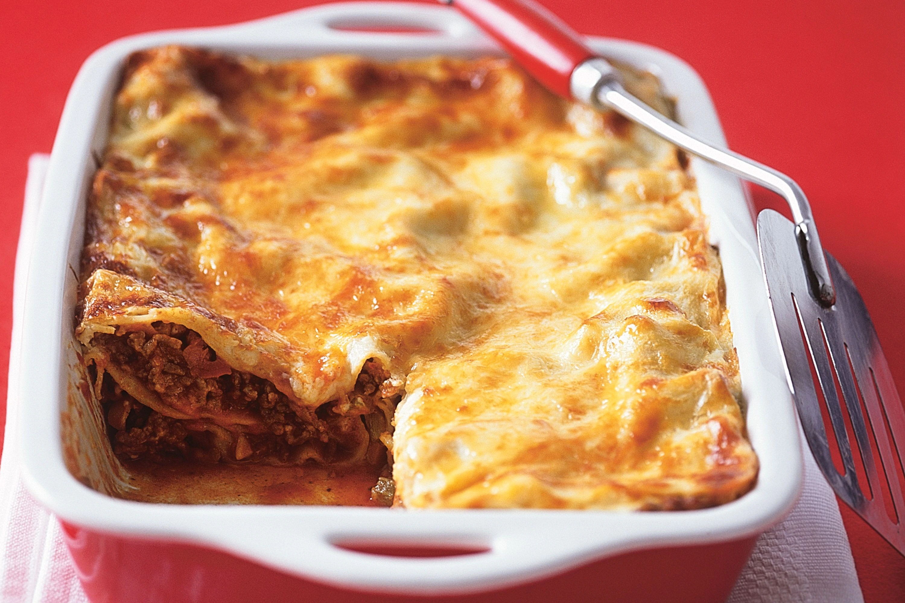
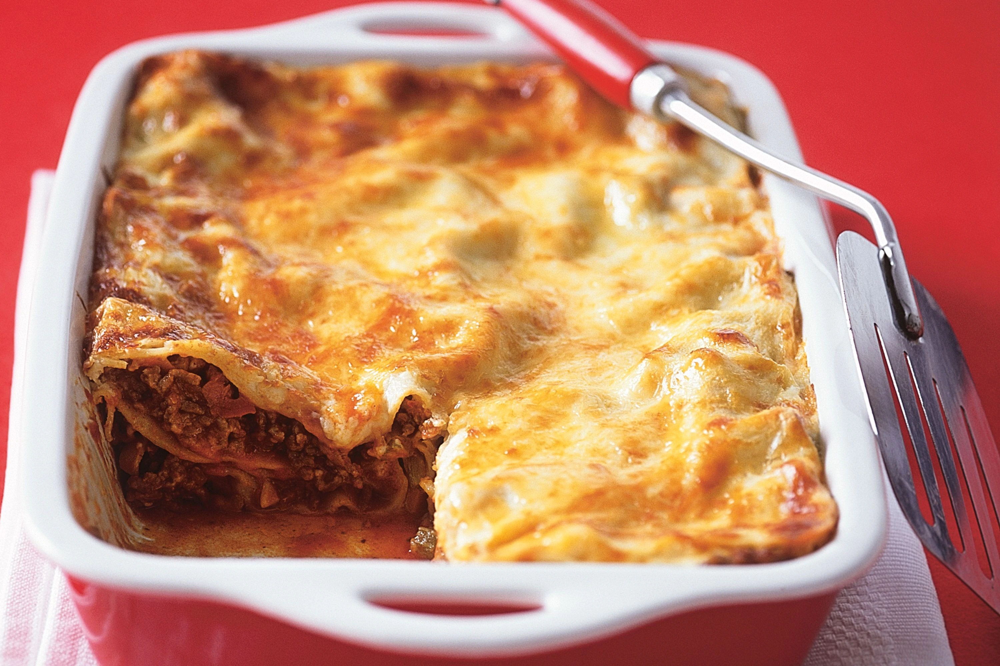

It takes up to 45 minutes to prepare this meal
Heat the olive oil in a large pot and sauté the garlic, carrot, herbs, onion and bacon for
a few minutes on high heat.
Add the meat allowing it to be brown. When mixed through, add the can of chopped
tomatoes.
Set the stove on medium to low heat, cover and let it cook until the meat is cooked and
the carrots are soft. You might want to give it a stir every now and then. Set it aside.
Prepare the béchamel sauce: Heat the butter on medium to high heat in another
saucepan until melted, remove from stove and add the flour. Whisk and then add the
milk. Give it another whisk through to ensure that there are no lumps.
Put it back on the heat and whisk as it heats up, cooks through and thickens to your
liking. Add salt and black pepper to taste
Use an oven-proof dish to construct your lasagna layers. First off, drizzle a tablespoon
or two of the meat juice from the pot of lasagna meat. There should be quite a lot of
juices that cooked up.
Then slide one or two (depending on the size of your dish) pasta sheets on the bottom
of the dish, top with a small layer of meat, a layer of béchamel sauce and another layer
of pasta sheets.
Repeat this step, now the last layer should be the béchamel sauce (depending on how
deep your dish is).
Sprinkle the top of the béchamel layer with grated Parmesan cheese and paprika, and
bake in the oven for 30 minutes. A knife should easily glide into the baked lasagna
when it’s done.
Serve hot with a side of salads, or healthy vegetables.
 


tags to write min paragraphs